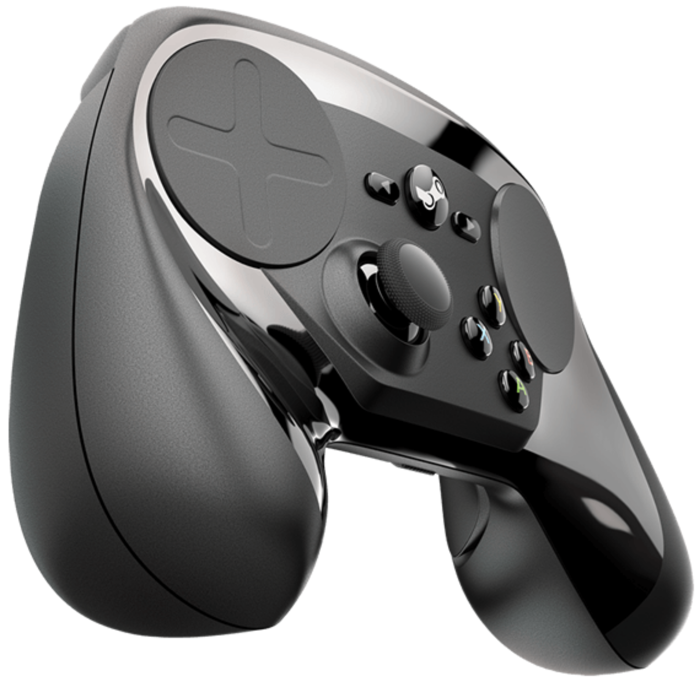
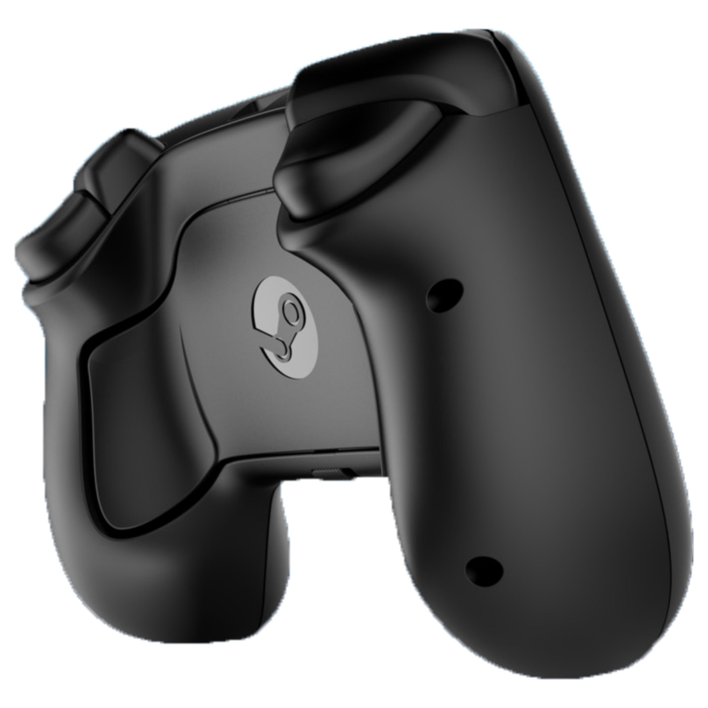

Los trackpads duales del Steam Controller posibilitan la alta fidelidad de entrada necesaria para jugar con gran precisión a juegos de PC desde tu salón.
Experimenta un nuevo de nivel de control preciso para tus juegos favoritos. El Steam Controller te permite jugar tu colección de juegos de Steam al completo en tu TV, incluso los diseñados sin compatibilidad con mando. Contando con trackpads duales, respuesta háptica en HD, gatillos de doble pulsación, botones traseros y plantillas de controles totalmente personalizables, el Steam Controller ofrece un nuevo nivel de control preciso. Encuentra tu configuración favorita en la Comunidad Steam, o crea y comparte la tuya propia.

Los actuadores hápticos en ambos lados del controlador proporcionan vibraciones precisas y de gran fidelidad en microsegundos. Siente el giro de un trackball virtual, el clic de una rueda de ratón o el disparo de un rifle.